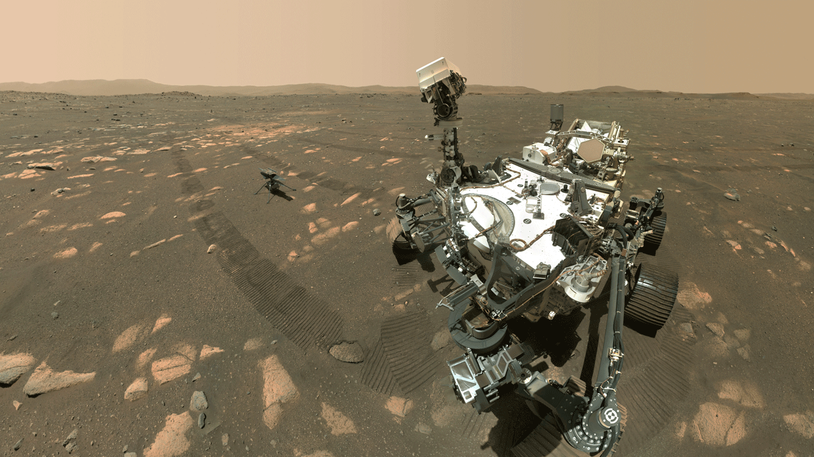

Perseverance
Searching for evidence of ancient life and collecting samples that could help explain Mars' past.

Mission Overview
Perseverance is the rover for NASA's Mars 2020 mission. It explores Jezero Crater for signs of ancient microbial life and collects samples for potential return to Earth.
- Launch: July 30, 2020
- Landing: February 18, 2021
- Landing site: Jezero Crater, Mars
Evidence of a Wetter Mars
Perseverance has gathered evidence that Jezero Crater once contained a lake, river, and delta system. These environments help scientists investigate whether ancient Mars could have supported life.
Collecting Samples
The rover uses a drill to collect rock cores and seals samples in tubes. Cameras and scientific instruments help its team examine rocks and choose sampling locations.
A Flying Companion
Perseverance carried the Ingenuity helicopter to Mars. Ingenuity demonstrated powered, controlled flight on another planet and completed 72 flights.